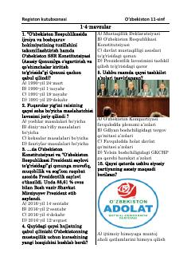

OT11-sinf oʻquvchilari uchun Oʻzbekiston tarixidan universal testlar toʻplami.
Ushbu qoʻllanma 11-sinf oʻquvchilari uchun Oʻzbekiston tarixi fanidan universal test savollari va topshiriqlarini oʻz ichiga oladi. Kitobda mustaqillik yillari tarixi, davlat qurilishi va islohotlarga oid mavzular yuzasidan testlar berilgan.